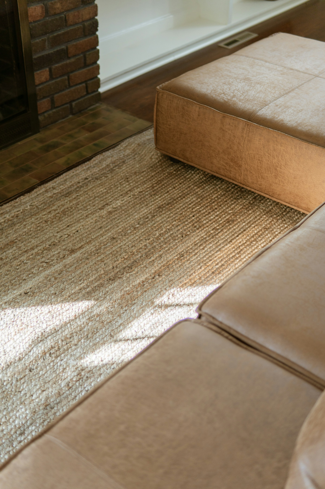
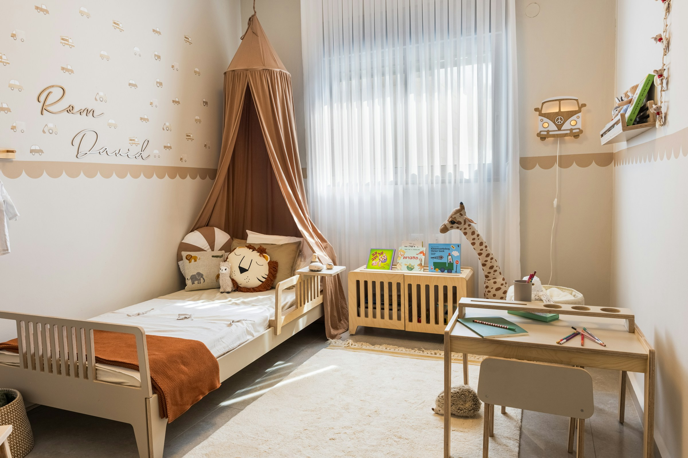
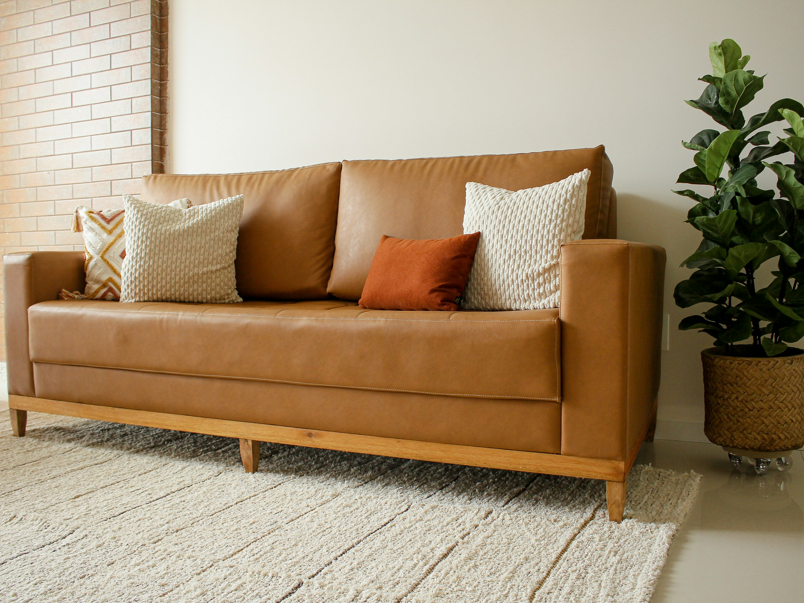
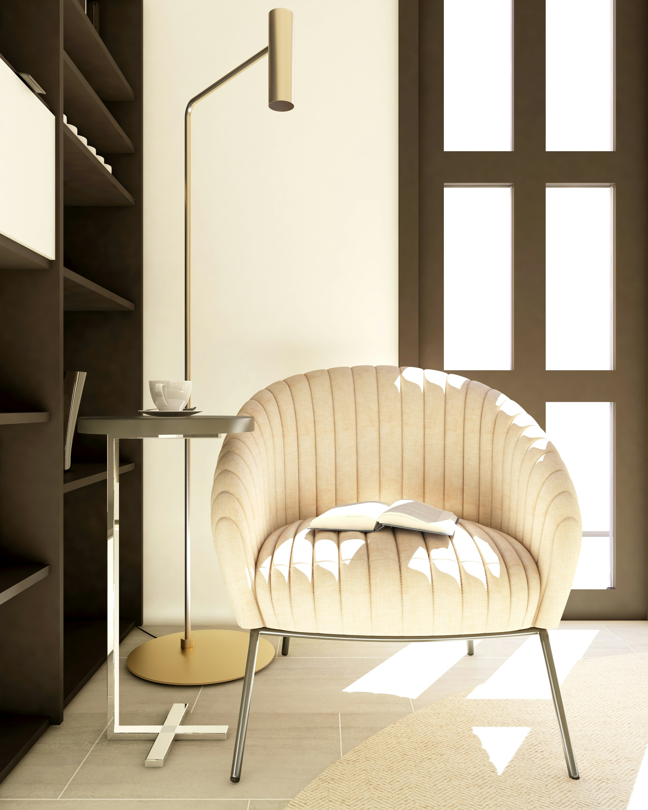

Product photography
Best for Family Lounging
A Deep Sectional That Actually Works for Family Living
Generous enough for everyday lounging without looking overly bulky.
Explore the PickEditor's Choice
Editor's Choice is our ongoing edit of furniture, lighting, rugs, outdoor pieces, and home products that stand out for design, proportions, materials, functionality, or value.
This is not an endless product catalog. It is a smaller collection of products we believe deserve a closer look.
Prices and availability may change. Always confirm current product details with the retailer before purchasing. Prices shown were checked on September 16, 2026.
Generous enough for everyday lounging without looking overly bulky.
Explore the Pick
A compact footprint, useful proportions, and a shape that works especially well in tighter rooms.
Explore the Pick
Simple enough to live with long term, distinctive enough to become the focal point.
Explore the Pick
A strong silhouette and practical dimensions at a price point that leaves room in the budget for the rest of the room.
Explore the Pick
Available in the larger sizes most living rooms actually need, with a low pile that suits high-traffic spaces.
Explore the Pick
Simple lines and solid construction that will not look out of place as a child's room changes.
Explore the Pick
Apartment-scale dimensions without the shallow seat that usually comes with them.
Explore the Pick
Enough depth to be practical, low enough to sit comfortably under a window or artwork.
Explore the Pick
Quietly sculptural, warm in the evening, and easy to pair with a range of lounge chairs.
Explore the Pick
A single investment piece that anchors the room and holds up to daily use for decades.
Explore the Pick
Deep, comfortable seating in weatherproof materials that would not look out of place indoors.
Explore the Pick
A compact table and easy chairs that turn a small balcony or side patio into a place to actually eat.
Explore the PickProduct names and brand names belong to their respective owners and are referenced for editorial and sourcing purposes; no affiliation or endorsement is implied. Retail prices, promotions, availability, and lead times can change; confirm current information with the retailer before purchasing.
Contact us for furniture sourcing and product comparison support.